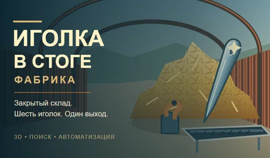

Python
Tkinter · pandas · NumPy · Pytest · Playwright
Работаю с Python и Tkinter. В курсовом проекте использовал Python вместе с MySQL. В моём стеке есть инструменты для работы с данными, тестирования и автоматизации браузера.
Рад знакомству
Учусь на программиста, пишу на Python и C# и работаю с базами данных.
Ещё разбираюсь в компьютерах, настраиваю домашние серверы и интересуюсь электрикой. Здесь собрал немного о себе и о том, чем занимался.
Обо мне
Учусь в КМПО РАНХиГС по направлению «Информационные системы и программирование». В учёбе и собственных проектах работаю с приложениями, играми и базами данных.
Мне интересна и аппаратная часть: разбираюсь во внутреннем устройстве компьютеров, работаю с Linux и домашними серверами. Есть и опыт вне IT — летом собирал электрощитки.
Английский — B1–B2. Свободно общаюсь на английском.
В свободное время тренируюсь, бегаю и увлекаюсь 3D-печатью.
Навыки
Языки и инструменты, с которыми уже работал в своих проектах.
Tkinter · pandas · NumPy · Pytest · Playwright
Работаю с Python и Tkinter. В курсовом проекте использовал Python вместе с MySQL. В моём стеке есть инструменты для работы с данными, тестирования и автоматизации браузера.
MySQL · PostgreSQL · DBeaver · pgAdmin
Проектирую таблицы и связи между сущностями. Работал над схемой складской базы данных и использовал MySQL в учебном приложении.
C# · C++ · Unity · 2D
Работаю с C#, C++ и Unity. Есть опыт собственного проекта 2D-игры.
Arch Linux · Ubuntu · SSH · SFTP · Netplan
Работал с Arch Linux и Ubuntu. Настраивал домашние серверы, подключение по SSH, передачу файлов по SFTP и сетевые подключения через Netplan.
Практический опыт
Разбираюсь во внутреннем устройстве компьютера. Интересуюсь комплектующими и тем, как аппаратная часть связана с программами.
Летом работал на сборке электрощитков. Мне нравится электрика, и эта работа дала опыт с реальным оборудованием.
Проекты
Собственные идеи и учебные задачи, над которыми я работал.
Консольный инструмент для первичной проверки папки с изображениями перед разметкой датасета или обучением модели. Находит повреждённые файлы, точные дубликаты и изображения с недостаточным разрешением, затем формирует CSV-отчёт.
Проект рекурсивно обрабатывает BMP, GIF, JPEG, PNG, TIFF и WEBP, определяет формат и размеры изображения, считает SHA-256 для поиска точных копий и сохраняет результаты в отчёт.
Это учебный проект. Он помогает подготовить исходные изображения к следующему этапу работы, но не оценивает качество разметки объектов.
Курсовой проект, связанный с работой отеля. Практика разработки приложения на Python и работы с реляционной базой данных.
Работал над проектом в PyCharm с использованием Python и MySQL, а также готовил отчёт и проектную документацию.
Проектирование схемы склада: сущности, таблицы и связи между ними.
Продумывал структуру базы и уточнял связи между сущностями. Основной фокус — понятная реляционная схема для будущего приложения.

Игра · Яндекс Игры3D-игра про сбор сена, поиск иголок и создание фабрики с конвейерами и станками.
В игре есть чертежи, производственные цепочки и генераторы. Прогресс сохраняется. Предусмотрены управление на компьютере и телефоне, русский и английский языки.
В консоли Яндекс Игр сохранён черновик; публичная ссылка пока не добавлена.
Контакты
По проектам, учёбе или если есть что обсудить.